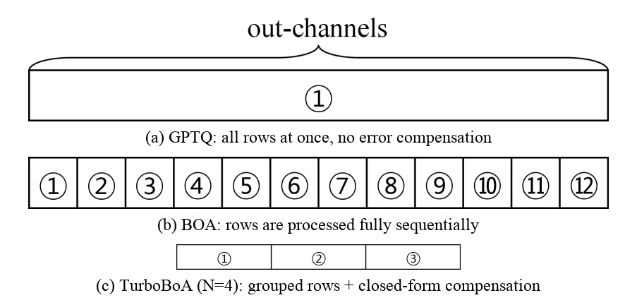

ICLR 2026 conference paper · Samsung Research · arXiv:2602.04929
Make BOA parallel enough without giving up its attention-aware correction.
TurboBoA groups out-channels, compensates them with closed-form updates, then repairs accumulated input error and stale quantization grids.
| method | dependency model | row schedule | low-bit behavior |
|---|---|---|---|
| GPTQ | layer-wise Hessian | all rows in parallel | fast, but weak at INT2 |
| BOA | attention-aware Hessian | fully sequential rows | accurate, but slow |
| TurboBoA | attention-aware + propagated-error terms | N rows jointly + closed-form compensation | fast and accurate |

| method | N | Llama3-8B time | Llama3-8B PPL | 70B time | 70B PPL |
|---|---|---|---|---|---|
| BOA | 1 | 94.75 min | 15.20 | 16.99 hr | 7.726 |
| TurboBoA F1 | 16 | 25.30 min | 15.41 | 5.636 hr | 7.758 |
| TurboBoA F1 | 32 | 22.95 min | 15.22 | 5.060 hr | 7.746 |
| method | features | 1B Wiki2/C4 | 3B Wiki2/C4 | 8B Wiki2/C4 |
|---|---|---|---|---|
| BOA | baseline | 40.40 / 104.9 | 32.26 / 79.17 | 15.20 / 36.95 |
| TurboBoA | F1 only | 41.85 / 108.1 | 31.99 / 80.09 | 15.41 / 38.96 |
| TurboBoA | F1+F2+F3 | 33.33 / 85.55 | 24.10 / 54.20 | 13.54 / 32.99 |
TurboBoA works because it spends sequentiality only where it still buys compensation.
Rows are grouped for throughput, but the math still routes their errors into remaining rows, inherited inputs, and updated grids.
| setting | model | BOA PPL | TurboBoA PPL | zero-shot |
|---|---|---|---|---|
| INT2 + QuaRot | Llama3.2-1B Wiki2/C4 | 40.86 / 107.9 | 33.33 / 85.55 | 38.67 -> 40.31 |
| INT2 + QuaRot | Llama3-8B Wiki2/C4 | 15.24 / 36.82 | 13.54 / 32.99 | 50.29 -> 52.59 |
| INT3 + QuaRot | Llama2-13B avg acc | BOA 68.55 | TurboBoA 69.07 | FP16 69.83 |
“when N = 16, the number of sequential operations decreases from 128 to 8.”
對 128 個 out-channel 的矩陣，N=16 直接把 sequential steps 從 128 降到 8。
“We leave a formal theoretical characterization of the error bounds with respect to N as an interesting open question.”
作者明確承認 N 與誤差界的理論刻畫還沒完成；N=16 是實驗上穩健的工程折衷。
AI Agent frameworks / multimodal systems